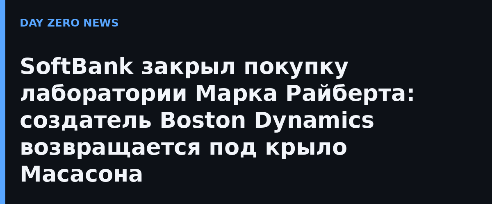

Издательство The Robot Report, которому SoftBank ответил на вопросы по почте, подтвердило: сделка по приобретению RAI у Hyundai Motor Group завершена. Финансовые условия стороны не раскрыли, публичного анонса ни SoftBank, ни институт не выпускали — отдельно отметим, что официального пресс-релиза по сделке нет, данные построены на отраслевой отчётивности. Договорённость о покупке отраслевая пресса описывала ещё в сентябре 2026 года.
RAI основан в 2022 году Марком Райбертом — человеком, который в 1992-м создал Boston Dynamics. Стартовое финансирование превысило 400 млн долларов, его дала Hyundai. Институт базируется в Кембридже (Массачусетс) с офисом в Цюрихе и занимается фундаментальными задачами робототехники: передвижение, манипулирование, восприятие и «интеллект» машин. Даже после смены владельца лаборатория расширяется: сейчас открыто 24 вакансии — от обучения роботов и симуляций до навигации и аппаратной инженерии.
Сделка возвращает SoftBank и Райберта друг к другу. В 2017 году SoftBank купил Boston Dynamics у Alphabet, а в 2021-м продал контрольный пакет Hyundai — тогда весь роботостроительный актив оценивался в 1,1 млрд долларов. Hyundai недавно выкупила и остаток в 9,65%, став полноправным владельцем Boston Dynamics. Теперь же Hyundai расстаётся с лабораторией Райберта — и та снова достаётся японскому конгломерату.
За последние годы SoftBank нарастил роботостанцию из 1X Technologies, Agile Robots, AutoStore, BALYO, Berkshire Grey, Brain Corp, Skild AI и Symbotic — наблюдатели уже предвещают RAI синергию со Skild и Agile Robots. Правда, параллельно у SoftBank подвис крупнейшая робототехническая сделка: покупка робототехнического подразделения ABB за 5,375 млрд долларов оказалась под угрозой после того, как китайские регуляторы заблокировали её в Китае. Так что лаборатория Райберта — пока самая чистая победа конгломерата в отрасли за полгода.